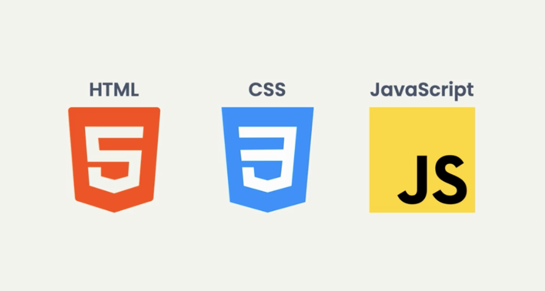
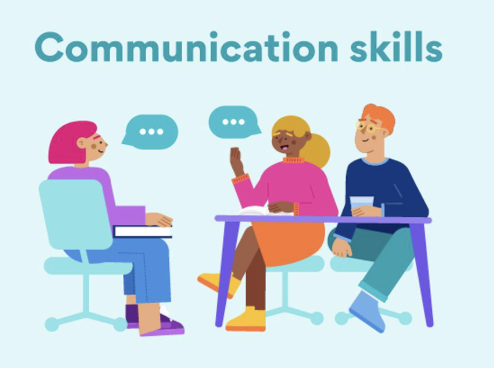

사용자 중심의 디지털 경험을 만듭니다. UX Research, Interaction Design, 그리고 React 기반의 개발을 연결하여 사용자가 진정으로 필요로 하는 제품을 구축합니다.
유연하게 소통하고 견고하게 개발합니다.

React.js를 이용한 프론트엔드 개발경험이 있으며, Javascript(ES6)에 능숙합니다. Vite.js와 더불어 핵심적인 React library 활용 경험이 있습니다.

Github 이용한 협업 경험이 있으며, Jira, Notion 등의 협업 도구 사용 경험도 있습니다. 기획, 디자인, 총무 등 다양한 직무 경험을 기반으로 다른 직군과 원활한 커뮤니케이션이 가능합니다.
저는 UX 마인드를 갖춘 Front-end 개발자입니다. Stony Brook University에서 Computer Science를 전공하였으며, 단순히 디자인을 구현하는 것에 그치지 않고, 개발 프로세스 전반에서 사용자의 관점에서 질문하고 고민하며 최선의 경험을 제안합니다.
디자인부터 개발까지 이어지는 전체 파이프라인을 다룹니다. 사용자 인터뷰와 Persona Research를 수행하고, 도출된 인사이트를 Figma 고충실도 Prototype으로 시각화하며, 이를 React.js 기반의 실제 서비스 인터페이스로 구현합니다.
기술적 실현 가능성과 인간에 대한 공감이 함께 움직일 때 최고의 디지털 제품이 탄생한다고 믿습니다. 중고차 마켓플레이스 리디자인부터 6.8만 회 이상의 노출을 기록한 마약 예방 AR 캠페인까지, 모든 프로젝트는 "사용자에게 진짜 필요한 것이 무엇인가?"라는 질문에서 시작합니다.
다양한 경험과 프로젝트를 통해
노하우를 쌓고 있습니다.
2023.04 - 2026.03
Researcher
2023.04.14 - 2025.08.22
2023.07.09 - 2024.04.28
2024.08 - 2025.05
Brarin-Inspired Computing Lab (SBU)
주요 프로젝트의 세부 사항을 확인해보세요
성향·경험·시장 데이터를 통합 분석해 직무 적합도, 확신도, 리스크를 정량적으로 제공하는 커리어 의사결정 플랫폼입니다.
Gemini API와 Supabase를 활용한 AI 연애 심리 분석 서비스입니다. 1인 개발자로서 기획부터 TypeScript 기반 프론트엔드 구축, 배포까지 전 과정을 수행했습니다.
뉴욕주 공무원을 위한 React.js 기반 재무 설계 플랫폼입니다. 3인 팀의 유일한 Front-end 개발자로서 사용자 시나리오를 인터랙티브한 대시보드 인터페이스로 전환했습니다.
국내 최대 중고차 마켓플레이스 앱의 사용자 중심 리디자인 프로젝트입니다. Persona Research를 통해 차량 비교 경험의 Pain Point를 파악하고 Prototype을 제작했습니다.
Z세대를 타겟으로 한 AR 기반 마약 예방 캠페인입니다. 실시간 얼굴 변형 필터를 디자인하였으며, 임상 데이터를 정서적 공감을 일으키는 소셜 미디어 경험으로 전환했습니다.
다양한 교내 활동을 통해 역량을 쌓아왔습니다
한글 자음과 모음 교육 경험 및 기초 언어 학습을 위한 지원적인 학습 환경을 제공했습니다.
팀별 프로젝트 운영 및 동아리 내 행사·특강 기획을 담당하며 협업 역량을 키웠습니다.
Scratch를 활용한 프로그래밍 수업 기획 및 진행을 통해 기술 역량 향상을 지원했습니다.
2018 - 2025
Computer Science 전공, AI and Data Science 세부전공
2015 - 2018
2025.09.03
Intermediate Mid 2
2020.02.28
단일등급